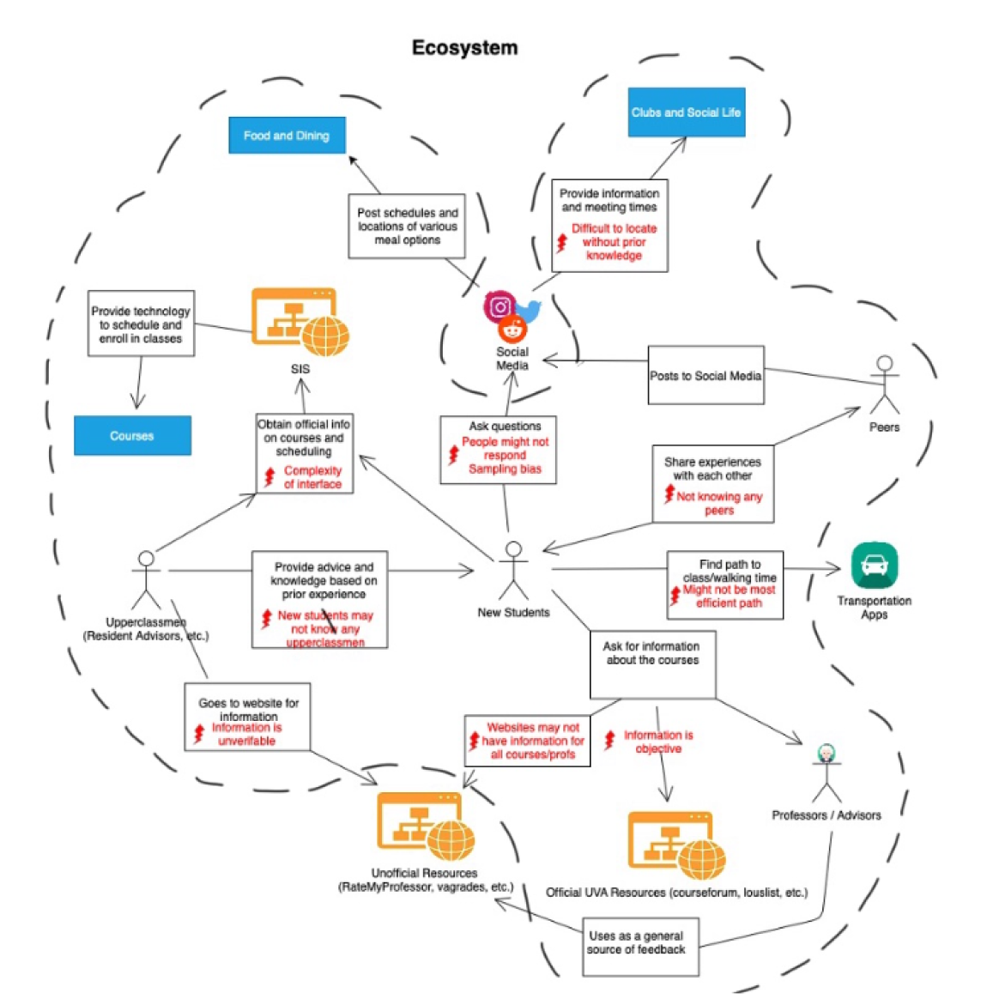
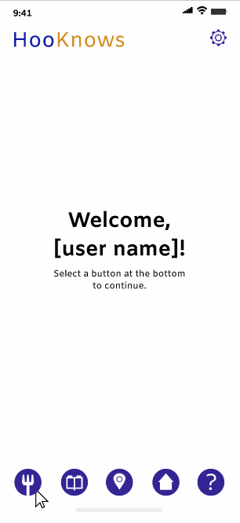
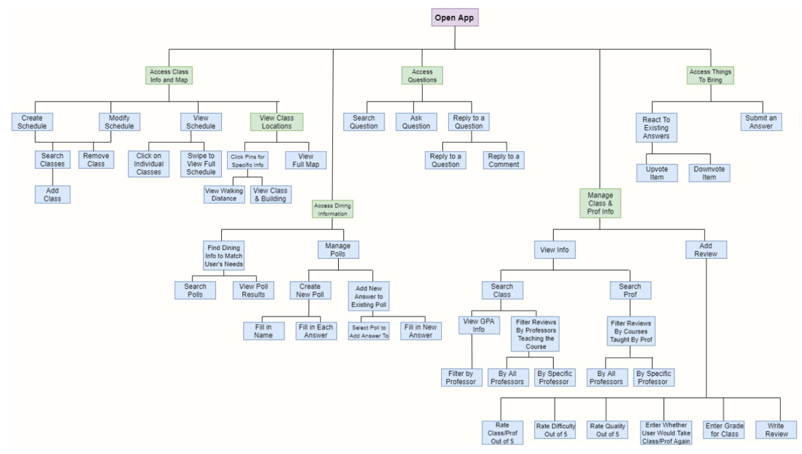
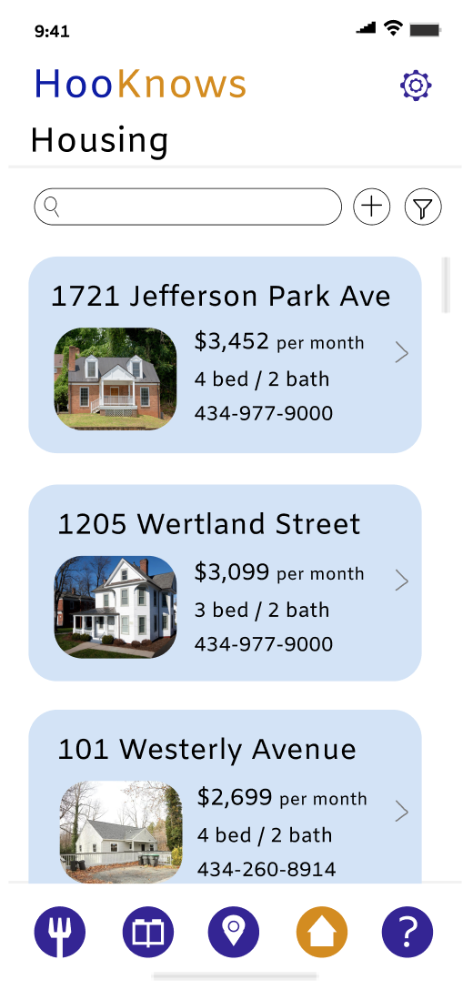
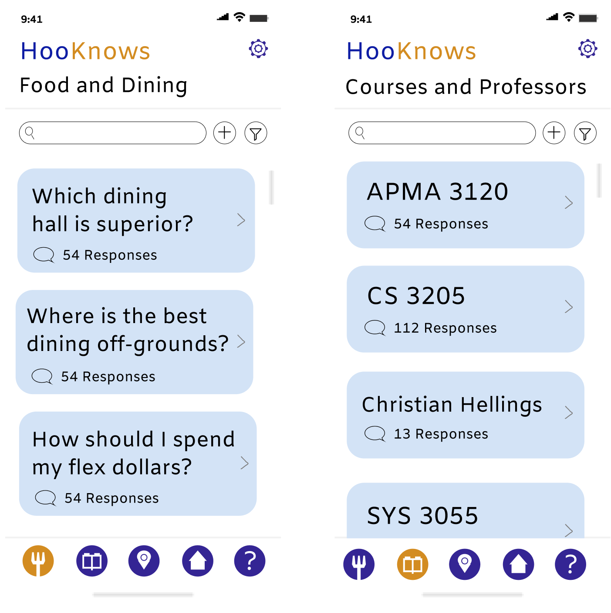

Challenge
Transfers, first-years, and anyone new to the University of Virginia
all experience some degree of difficulty integrating into the school.
Where this be not knowing where to eat, confusion about the best path
to take to get to class, or in a more broad scope, needing to learn
more about the school, many students encounter
trouble locating useful University resources.

Solution
In order to combat this entry confusion, my team created HooKnows, a
mobile application powered by upperclassmen that is designed to
provide incoming students with all of the University's helpful
information in addition to subjective information that is difficult to
find in University-sponsored resources.

User-Certified Features
In selecting the features for HooKnows, we wanted to get input from a
number of different students on what would be most helpful for them.
To do this, I interviewed first years and transfer students on what
they have struggled with most in their transition to University life.
This led us to choose five tabs for the application: Q&A, Dining,
Housing, University Map, and Reviews, which were supported by each of
our interviewees.


Upperclassmen Retention
Since HooKnows is dependent on input from upperclassmen to provide
subjective resources, we also wanted to ensure the features encouraged
upperclassmen to use the application. Our initial proposal for
HooKnows included a "Things to Bring" tab in place of "Housing," but
after interviewing upperclassmen I quickly realized a "Housing"
feature would be much more useful in the long-run and therefore
encourage upperclassmen to keep the app as they become more
knowledgeable about the University.
Interface Consistency
With the number of tabs and information included in HooKnows, we
wanted to ensure the interface remained easily navigable and intuitive
to the user. Thus, in the application design we kept all of the
selectable features a consistent light blue color and kept the home
screen of almost every tab as a scrollable page of blue preview
bubbles that highlight key information.
